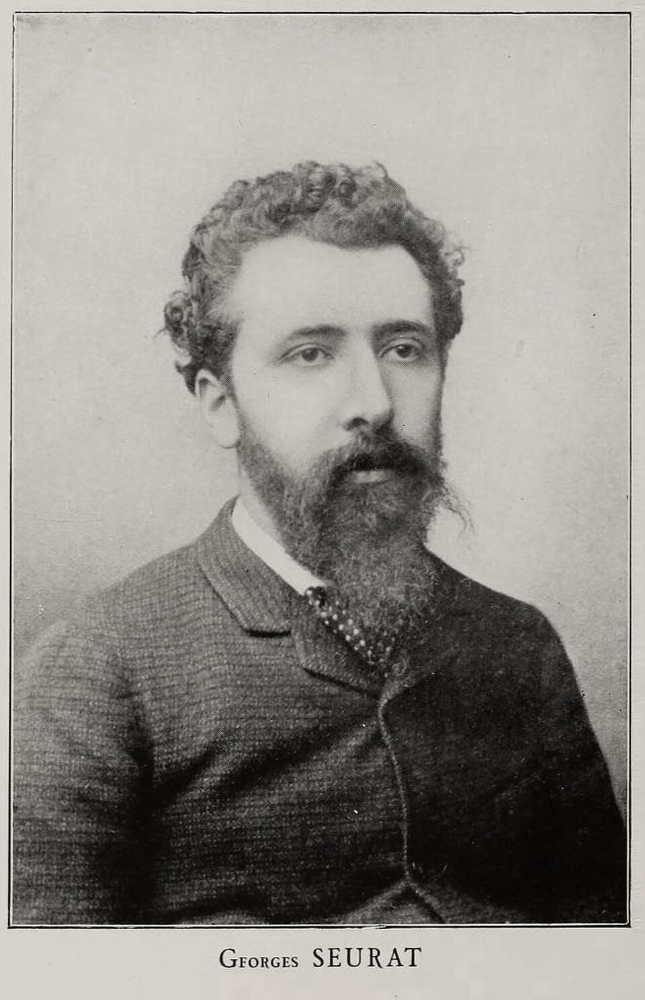

Il Genio che Inventò i Pixel
Georges Seurat non dipingeva semplicemente scene: lui le **decodificava**. In un'epoca di pura improvvisazione, lui introdusse la disciplina della fisica ottica. La sua non era solo arte, era una visione del futuro in cui la realtà è composta da infiniti, minuscoli frammenti di luce.
La Biografia: Una Vita per l'Eternità
Nato a Parigi nel 1859, Georges-Pierre Seurat visse una vita metodica, quasi monacale, dedicata alla ricerca della perfezione. Dopo gli studi classici, si distaccò dall'Impressionismo corrente perché lo considerava troppo "superficiale".
Trascorreva le mattine a fare schizzi nei parchi e i pomeriggi sepolto in studio, lavorando sotto una luce controllata. La sua opera monumentale, *La Grande-Jatte*, richiese due anni di lavoro incessante e milioni di tocchi di pennello.
La sua morte a soli 31 anni, nel 1891, rimane un mistero clinico (forse difterite o polmonite), ma il suo lascito è immortale: ha dimostrato che la bellezza può essere spiegata attraverso la logica.
Il Metodo: La Magia della Scomposizione
Ogni punto è una nota cromatica pura che attende il tuo sguardo.
Seurat comprese che il colore mescolato sulla tavolozza perdeva energia. Inventò così il **Divisionismo**: posare colori puri uno accanto all'altro.
È la Miscela Ottica: il tuo cervello fonde i punti gialli e blu creando un verde vibrante che nessun tubetto di colore potrà mai eguagliare. È lo stesso principio fisico che permette oggi al tuo smartphone di mostrare miliardi di colori.
L'Enigma della Grande-Jatte
Non è solo un parco. È un fregio moderno dove le figure sembrano statue congelate nel tempo. Seurat elimina il movimento per enfatizzare la struttura. Al centro di questo ordine quasi sacro, troviamo i dettagli che rendono l'opera leggendaria.
Ironia e Simbolismo: La Scimmia

L'elemento dissonante: una scimmia al guinzaglio nel cuore della borghesia.
Perché una scimmia? In questo scenario di estremo decoro borghese, la scimmia rappresenta l'imprevedibile, la natura selvaggia catturata in un abito elegante. È il tocco di genio di Seurat che trasforma un calcolo scientifico in un'opera profondamente umana e provocatoria.